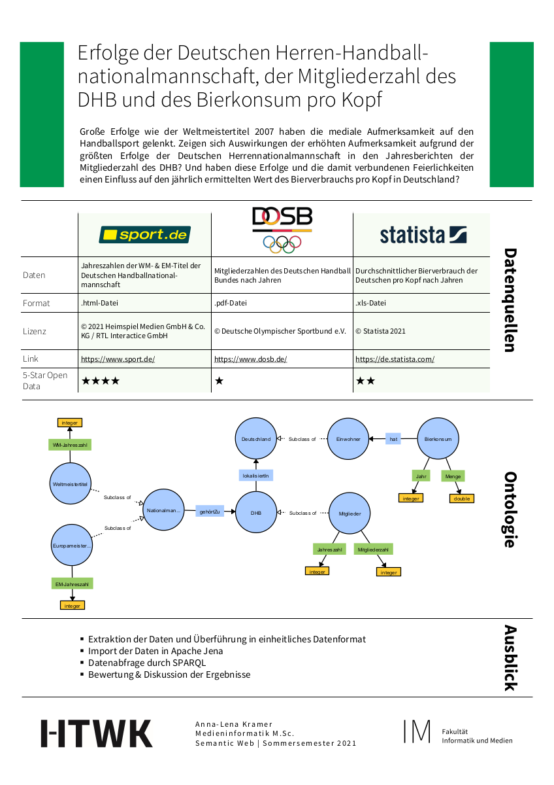

Anna-Lena
Great successes such as the world championship title in 2007 have drawn media attention to handball. Are there any effects of the increased attention due to the greatest successes of the German men's national team visible in the annual reports of the number of members of the DHB? And do these successes and the associated celebrations have an impact on the annual value of beer consumption per capita in Germany?
